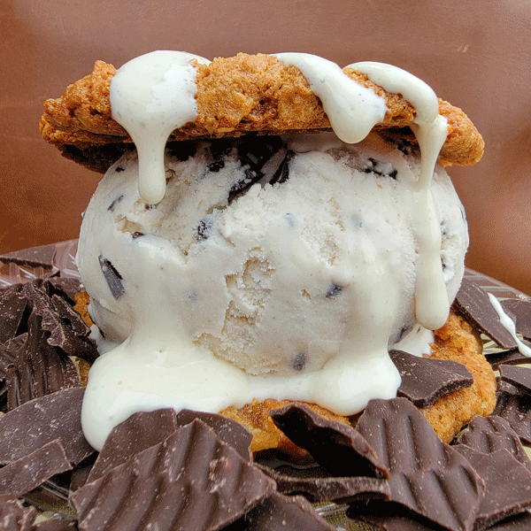

Soft and gooey on the inside, crisp on the outside dark chocolate brownies are topped with a layer of creamy topping and crushed cookies in this decadent but easy dessert.

Ingredients:
1 ½ cups white sugar
¾ cup all-purpose flour
½ cup high-quality unsweetened cocoa powder
½ teaspoon salt
¼ teaspoon baking powder
¾ cup unsalted butter, melted
large eggs
1 teaspoon vanilla extract
32 chocolate sandwich cookies (such as Oreo®), divided
Preheat the oven to 350 degrees F (175 degrees C). Grease a 9-inch square baking pan
Mix sugar, flour, cocoa powder, salt, and baking powder together in a mixing bowl
Whisk butter, eggs, and vanilla together in a separate bowl. Add butter mixture to the flour mixture and mix until well combined
Pour ½ of the batter into the prepared baking pan and smooth out with a spatula. Add 16 OREO® cookies in an even layer (4 rows of 4 cookies), then spread the remaining ½ of the batter over top
Bake in the preheated oven until edges are brown and center is set, 30 to 35 minutes
Remove pan from the oven and set on a wire rack. Let brownies cool completely, at least 30 minutes
Crush 12 of the remaining OREO® cookies. Place the whipped topping in a bowl and fold in the crushed cookies. Spread over the top of the brownies. Crush the remaining 4 cookies, then sprinkle over the top of the whipped cream mixture
Keep refrigerated until you are ready to slice and serve